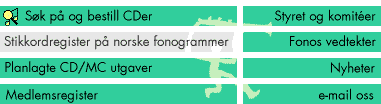

Dette skjemaet brukes til å søke i tittelbasen. Man kan ta ut lister etter ulike kriterier og i ulike formater. Spesifiserer man søkekriterier som identifiserer en unik tittel, returneres info om denne tittelen.
Tittel : Tittelnummer : Artist : Genre : Label :
HTML-dokument PostScript-dokument for visning på skjerm PostScript-dokument for lagring til fil
Kontaktperson Telefon Adresse Annonsetype Faste leieinntekter pr. kvartal (spesialavtaler ikke medregnet) Initiell kontakt Operativ kontaktperson
alfabetisk etter kundenummer etter registreringsdato, siste registrering først